同一篇文章用同一個種子和畫面描述，只換 Fooocus 風格。Lightning、1216×832、反向提示詞：text, letters, words, typography, watermark, signature, logo, caption
為什麼這個網站的文章寫在 git 裡：paper boats sailing down a calm river that splits into several branches and merges back into one stream, seen from above, morning light, peaceful
創世紀：一天之內，我和 AI 怎麼蓋出這個網站：a small house newly built on a hilltop at dawn, scaffolding still standing, a person and a small friendly robot resting side by side watching the sunrise
| 為什麼這個網站的文章寫在 git 裡 | 創世紀：一天之內，我和 AI 怎麼蓋出這個網站 | |
|---|---|---|
| 1. Fooocus V2 | 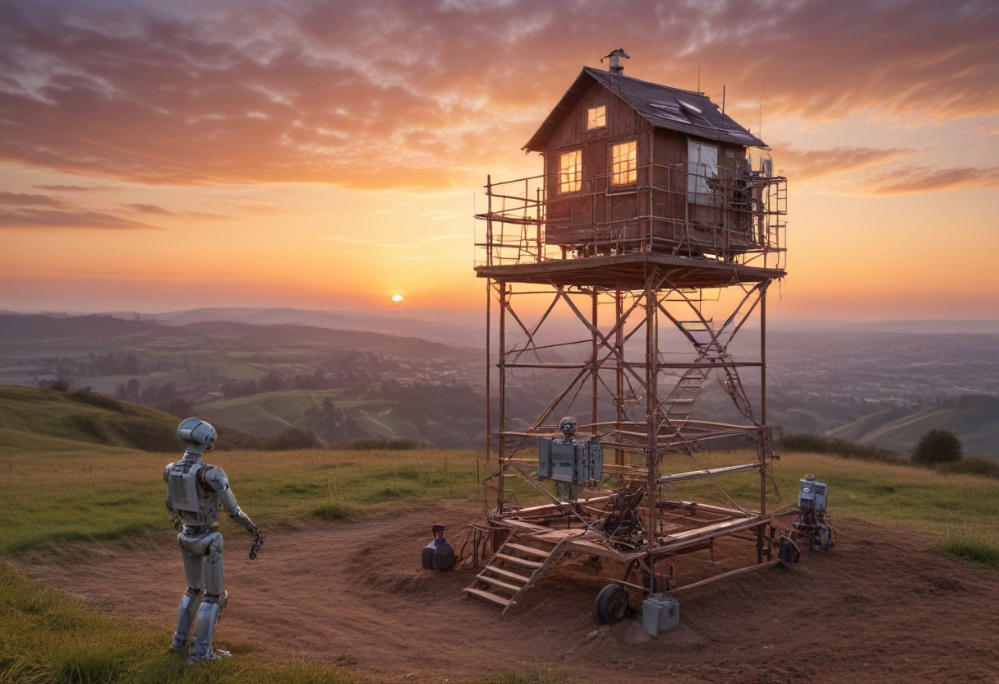 | |
| 2. Japanese Ink Drawing | 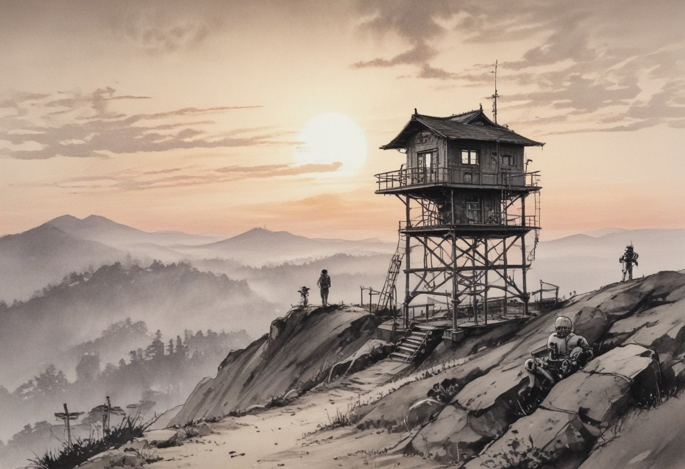 | |
| 3. MRE Sumi E Detailed | 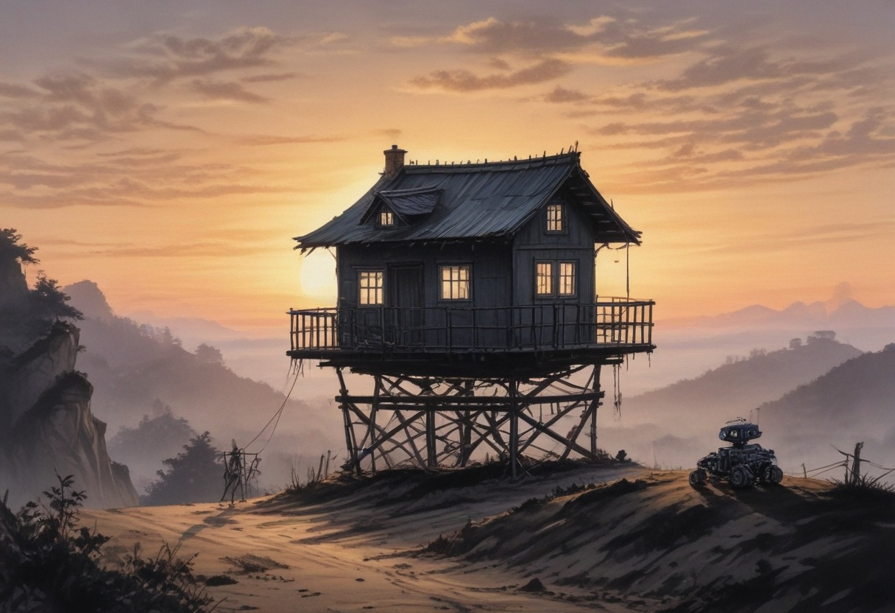 | |
| 4. Artstyle Watercolor | 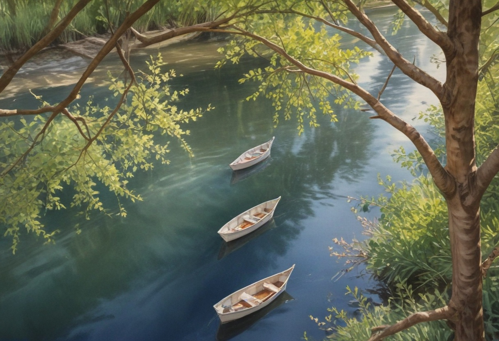 | 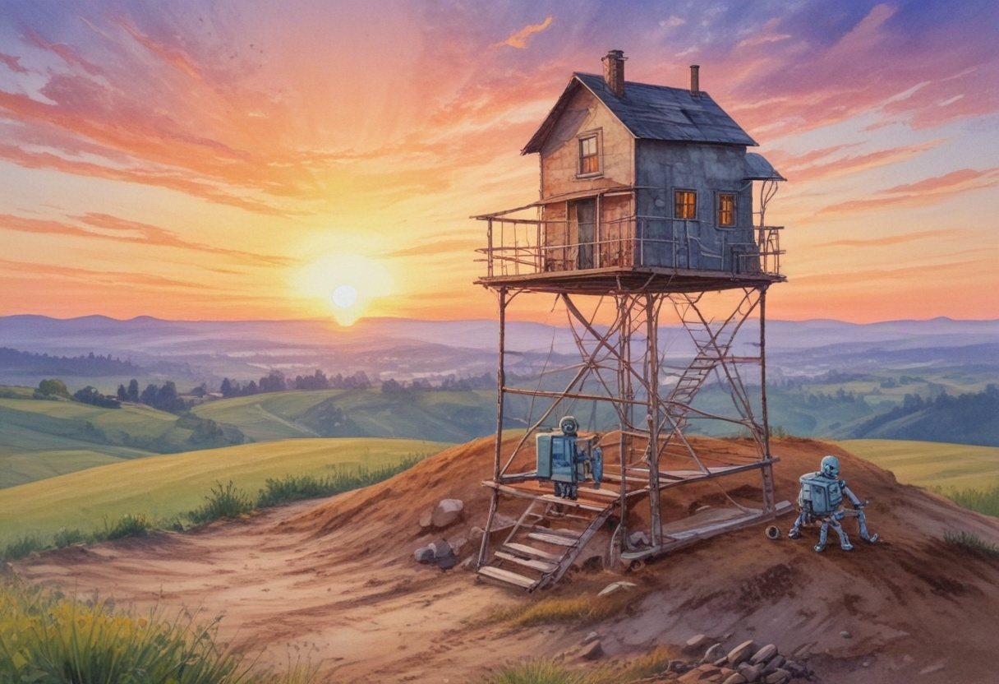 |
| 5. Papercraft Flat Papercut | ||
| 6. Papercraft Stacked Papercut | 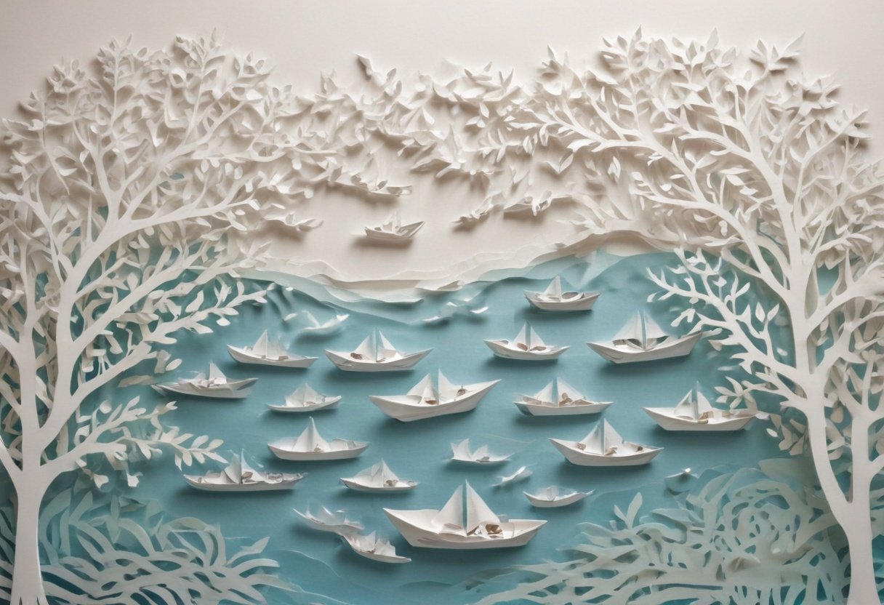 | |
| 7. SAI Isometric | 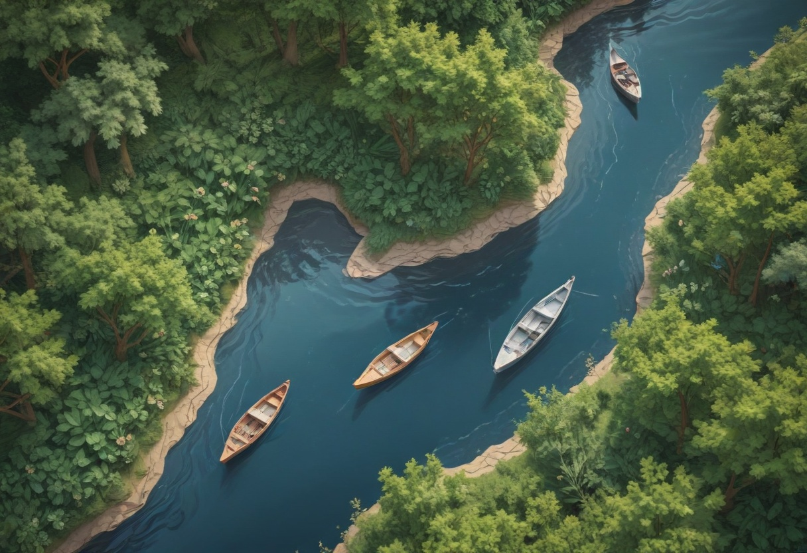 | 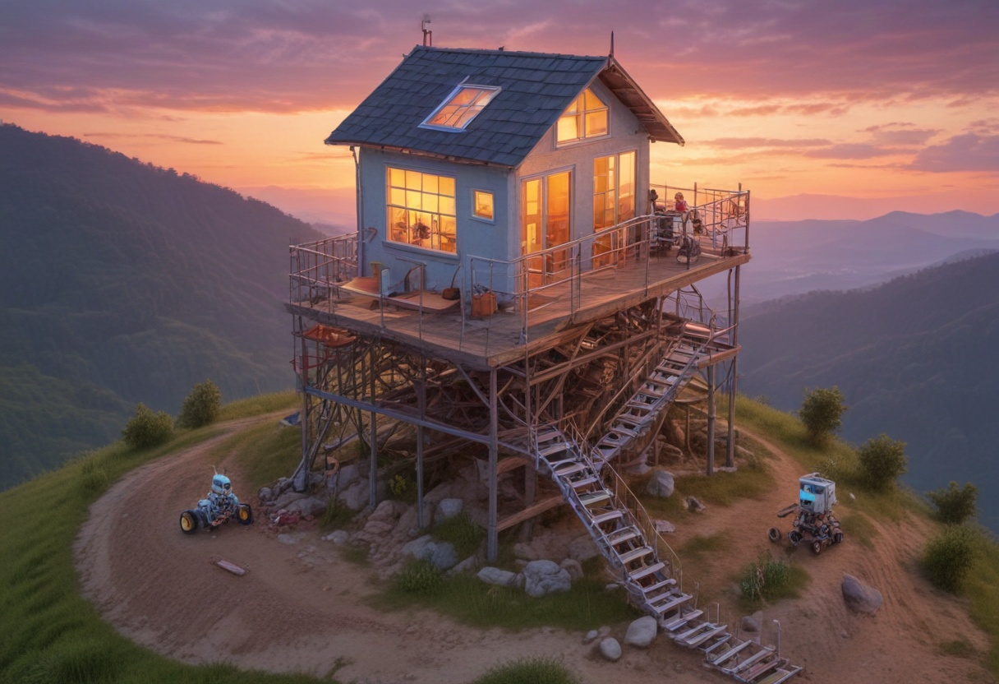 |
| 8. SAI Lowpoly | 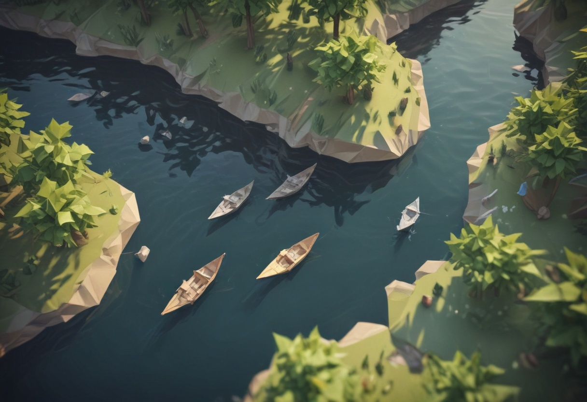 | |
| 9. Mk Ukiyo E | 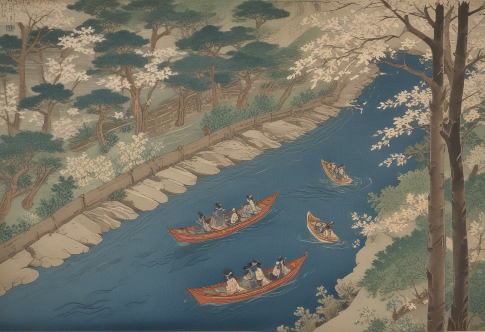 | 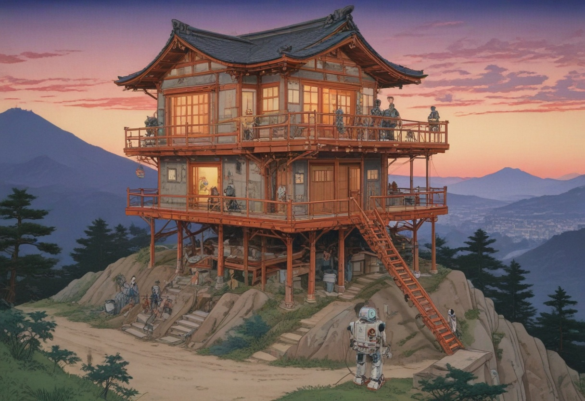 |
| 10. Simple Vector Art | 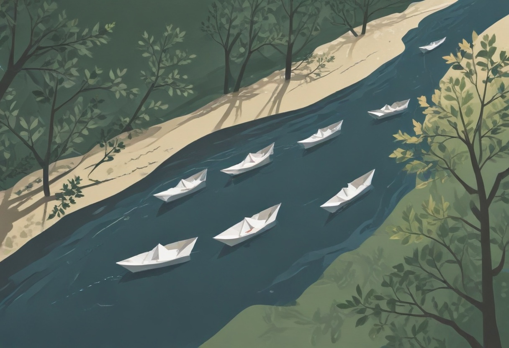 | 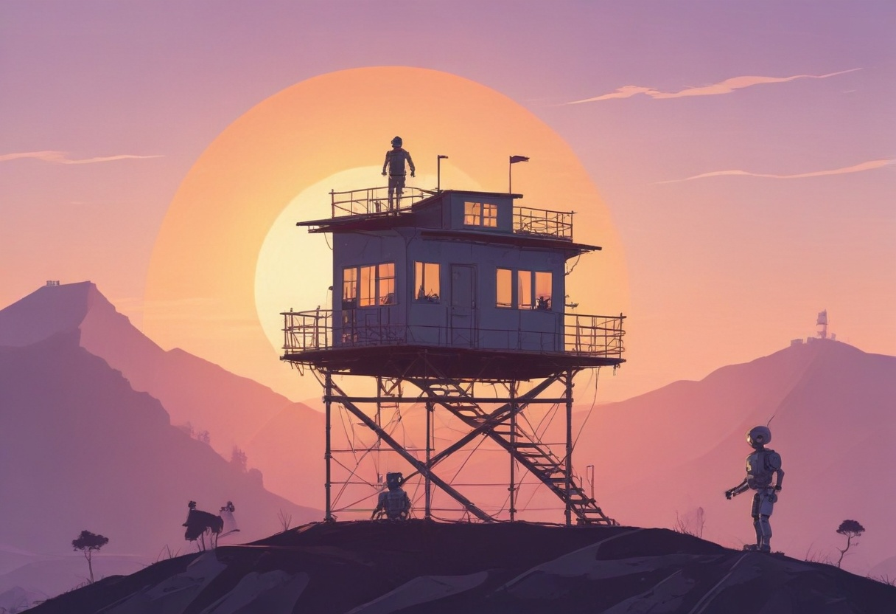 |
| 11. Blueprint Schematic Drawing | 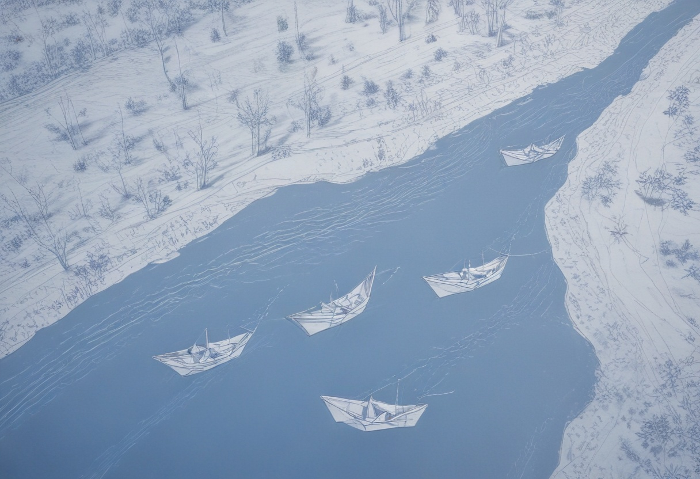 | |
| 12. Misc Minimalist | 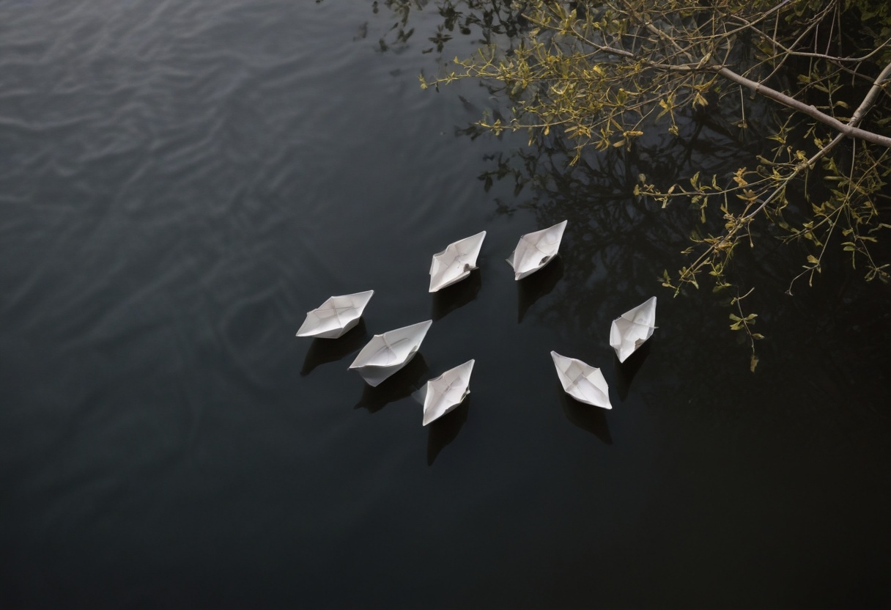 |